<!DOCTYPE html>
<html lang="en">
<head>
    <meta charset="utf-8" />
    <meta name="viewport" content="width=device-width, initial-scale=1.0, maximum-scale=1.0, user-scalable=no" />

    <title></title>
    <link rel="stylesheet" href="dist/reset.css">
    <link rel="stylesheet" href="dist/reveal.css" />
    <link rel="stylesheet" href="css/slides-extended.css" />
    <link rel="stylesheet" href="dist/theme/simple.css" id="theme" />
    <link rel="stylesheet" href="plugin/highlight/zenburn.css" />
    <link rel="stylesheet" href="plugin/customcontrols/style.css">

    <link rel="stylesheet" href="plugin/reveal-pointer/pointer.css" />


    <script defer src="dist/fontawesome/all.min.js"></script>
    <script defer src="plugin/load-mathjax.js"></script>

    <script type="text/javascript">
        function pageInIframe() {
            return (window.location !== window.parent.location);
        }

        let forgetPop = true;
        function onPopState(event) {
            if(forgetPop){
                forgetPop = false;
            } else if( pageInIframe()) {
                parent.postMessage(event.target.location.href, "app://obsidian.md");
            }
        }
        window.onpopstate = onPopState;
        window.onmessage = event => {
            if(event.data == "reload"){
                window.document.location.reload();
            }
            forgetPop = true;
        }

        function fitElements() {
            const itemsToFit = document.getElementsByClassName('fitText');
            for (const item in itemsToFit) {
                if (Object.hasOwnProperty.call(itemsToFit, item)) {
                    const element = itemsToFit[item];
                    fitElement(element, 1, 1000);
                    element.classList.remove('fitText');
                }
            }
        }

        function fitElement(element, start, end) {

            let size = (end + start) / 2;
            element.style.fontSize = `${size}px`;

            if (Math.abs(start - end) < 1) {
                while (element.scrollHeight > element.offsetHeight) {
                    size--;
                    element.style.fontSize = `${size}px`;
                }
                return;
            }

            if (element.scrollHeight > element.offsetHeight) {
                fitElement(element, start, size);
            } else {
                fitElement(element, size, end);
            }
        }

        document.onreadystatechange = () => {
            fitElements();
            if (document.readyState === 'complete') {
                if (pageInIframe() && window.location.href.indexOf("?export") != -1){
                    parent.postMessage(event.target.location.href, "app://obsidian.md");
                }
                if (window.location.href.indexOf("print-pdf") != -1){
                    let stateCheck = setInterval(() => {
                        clearInterval(stateCheck);
                        window.print();
                    }, 250);
                }
            }
        };
    </script>
</head>

<body>
    <div class="reveal">
        <div class="slides"><section  data-markdown><script type="text/template"><!-- .slide: class="drop" template="" -->
<div class="" style="position: absolute; left: 0px; top: 0px; height: 1000px; width: 1400px; min-height: 1000px; display: flex; flex-direction: column; align-items: center; justify-content: center" absolute="true">

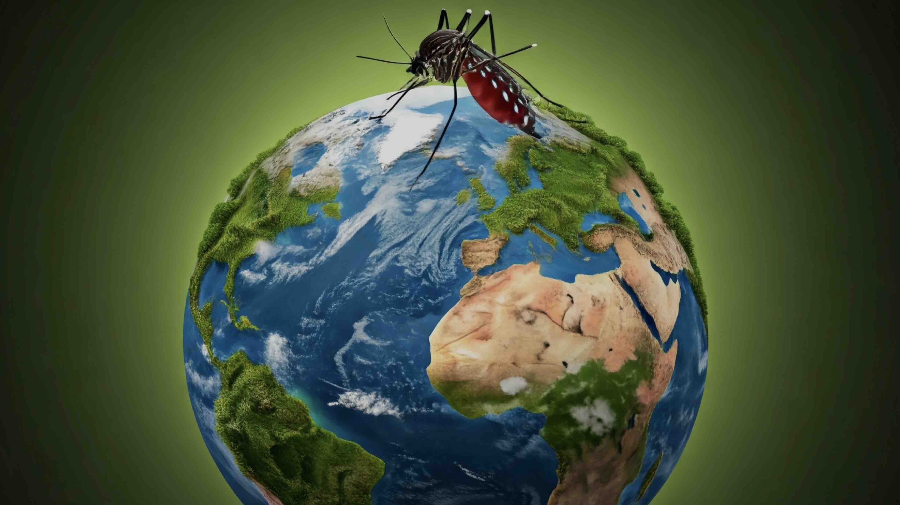
</div></script></section><section  data-markdown><script type="text/template"><!-- .slide: class="drop" template="" -->
<div class="" style="position: absolute; left: 0px; top: 0px; height: 1000px; width: 1400px; min-height: 1000px; display: flex; flex-direction: column; align-items: center; justify-content: center" absolute="true">


> "SUBTLE IS NATURE"
> 
> — Chung-I Wu & Hope Hollocher (1998)

<aside class="notes"><p><em>Comment</em>:
introduce complexity and build attention using this quote</p>
<ul>
<li><h2 id="teaching-notes">Teaching notes:</h2>
</div></li>
</ul>
</aside></script></section><section  data-markdown><script type="text/template"><!-- .slide: class="drop" template="" -->
<div class="" style="position: absolute; left: 0px; top: 0px; height: 1000px; width: 1400px; min-height: 1000px; display: flex; flex-direction: column; align-items: center; justify-content: center" absolute="true">

#### Moustiques vecteurs & changements globaux

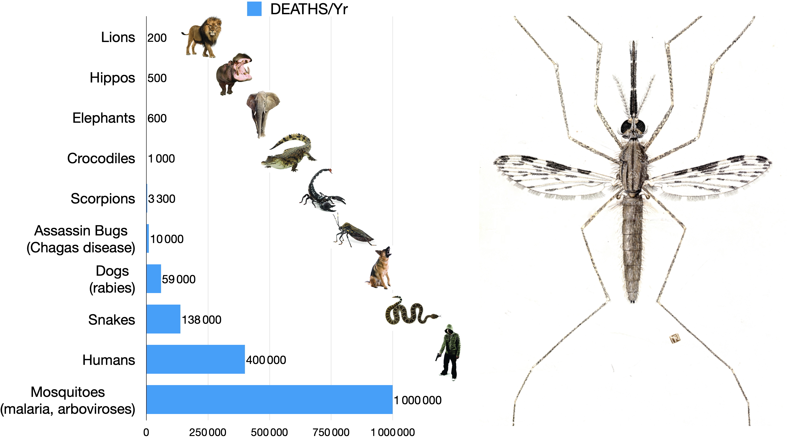


- Les **moustiques** sont les vecteurs de nombreuses maladies humaines majeures : paludisme, dengue, chikungunya, Zika, fièvre jaune, ....
- &shy;<!-- .element: class="fragment" data-fragment-index="1" -->Les **changements globaux** transforment leur écologie et la transmission des agents infectieux.
- &shy;<!-- .element: class="fragment" data-fragment-index="2" -->**Objectif du cours** : comprendre *comment* et *où* ces changements modifient le risque vectoriel.

*Sources:*
[WHO (2023). World malaria report 2023. Technical report, Geneva : World Health Organization. Licence: CC BY-NC-SA 3.0 IGO.](https://www.who.int/teams/global-malaria-programme/reports/world-malaria-report-2023)
<!-- .element: style="font-size: 14px; display: flex; flex-direction: column; align-items: flex-start; justify-content: space-evenly" class="small-indent" align="left" -->


<aside class="notes"><p><em>Commentaire</em> :
Ce cours s’adresse à des étudiant·e·s de biologie, médecine, santé publique et sciences environnementales.</p>
<p><em>Image suggérée</em> :
Carte mondiale des principales maladies à transmission vectorielle (paludisme, dengue, chikungunya, Zika, fièvre jaune, etc.).</p>
<ul>
<li><p><strong>Teaching notes</strong>:</p>
</li>
<li><p>Capture attention with the buzz phrase: &quot;mosquitoes are the most dangerous animal in the world&quot;</p>
</li>
<li><p>Open by asking: “When you hear ‘mosquitoes and global change’, what disease pops into your mind?” Expect “malaria” and “dengue”.</p>
<ul>
<li>Clarify that the course will not be an exhaustive catalogue of diseases but a <strong>mechanistic tour</strong> of how global environmental changes affect vector ecology.</li>
<li>Emphasise interdisciplinarity and that you will avoid heavy maths, focusing on intuition.</li>
</ul>
</li>
<li><p><strong>Gotchas</strong>:</p>
<ul>
<li>Don’t launch straight into climate; insist from the start that <strong>global change ≠ only climate change</strong>.</li>
<li>Avoid promising that you will cover every disease in detail; set expectations clearly.</div></li>
</ul>
</li>
</ul>
</aside></script></section><section  data-markdown><script type="text/template"><!-- .slide: class="drop" template="" -->
<div class="" style="position: absolute; left: 0px; top: 0px; height: 1000px; width: 1400px; min-height: 1000px; display: flex; flex-direction: column; align-items: center; justify-content: center" absolute="true">

#### Plan du cours

1. Rappels sur les moustiques vecteurs & les MTV
1. &shy;<!-- .element: class="fragment" data-fragment-index="1" -->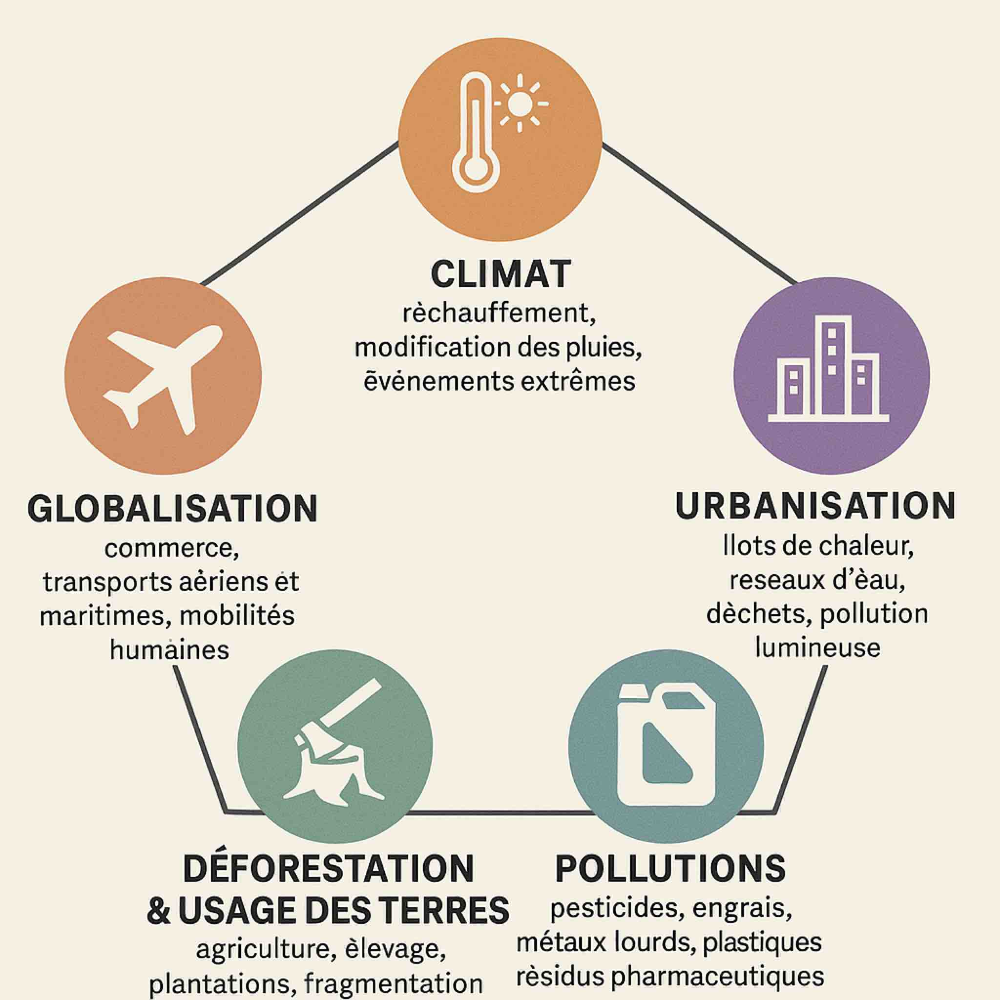

1. &shy;<!-- .element: class="fragment" data-fragment-index="2" -->Synthèse & perspectives "*One Health*"


<aside class="notes"><p><em>Commentaire</em> :
Chaque partie combine des exemples mécanistes et des études de cas.</p>
<p><em>Sources</em> :</p>
<ul>
<li><p>Patz et al., 2005, <em>EcoHealth</em>.</p>
</li>
<li><p><strong>Teaching notes:</strong></p>
<ul>
<li>Walk quickly through the plan, situating where climate, land use and invasions will appear.</li>
<li>Highlight that the last part (“Synthèse &amp; One Health”) will help them connect ecology, clinical practice and public health.</li>
</ul>
</li>
<li><p><strong>Gotchas:</strong></p>
<ul>
<li>Don’t spend too long here; aim for 2–3 minutes maximum.</li>
<li>Keep the language simple; this slide is about <strong>orientation</strong>, not detail.</div></li>
</ul>
</li>
</ul>
</aside></script></section><section  data-markdown><script type="text/template"><!-- .slide: class="drop" template="" -->
<div class="" style="position: absolute; left: 0px; top: 0px; height: 1000px; width: 1400px; min-height: 1000px; display: flex; flex-direction: column; align-items: center; justify-content: center" absolute="true">

#### 1/ Moustiques, changements globaux et, et MTV
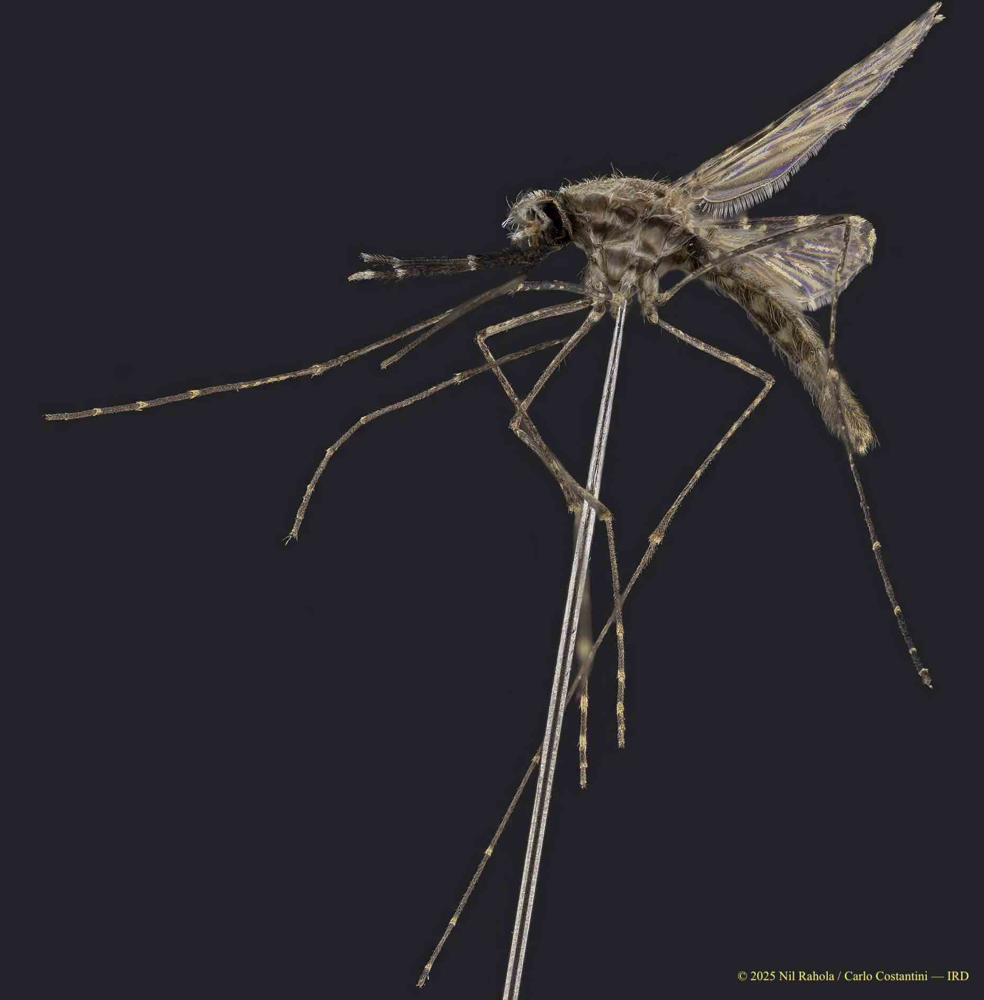
</div></script></section><section  data-markdown><script type="text/template"><!-- .slide: class="drop" template="" -->
<div class="" style="position: absolute; left: 0px; top: 0px; height: 1000px; width: 1400px; min-height: 1000px; display: flex; flex-direction: column; align-items: center; justify-content: center" absolute="true">

##### 1.1/ 3 acteurs, 2 environnements

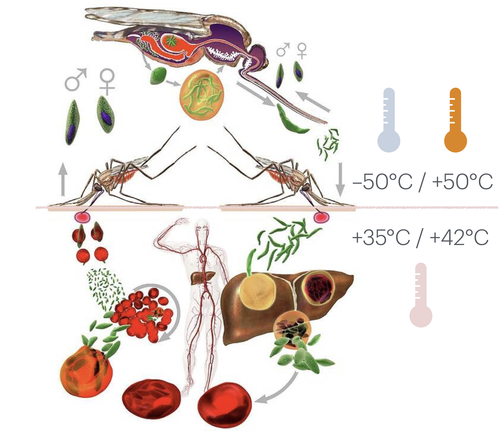


* **Trois acteurs** :
  * Moustique vecteur
  * Agent pathogène (virus, parasite)
  * Hôte humain (ou animal)

* **Deux environnements thermiques** :
  * Hôte homéotherme ≈ 37 °C
  * Moustique poïkilotherme → suit la température de l’air et de l’eau

- &shy;<!-- .element: class="fragment" data-fragment-index="1" -->La plupart des processus sensibles au climat se déroulent dans le **vecteur**.

<aside class="notes"><p><em>Commentaire</em> :
Rappel central : la biologie thermique du moustique et du pathogène est au cœur de l’impact du climat.</p>
<p><em>Sources</em> :</p>
<ul>
<li><p>Paaijmans et al., 2010, <em>PNAS</em>.</p>
</li>
<li><p>Mordecai et al., 2013, <em>Ecol. Lett.</em> ([PubMed][2])</p>
</li>
<li><p><strong>Teaching notes:</strong></p>
<ul>
<li>Use a simple verbal image: “The parasite lives half of its life at 37 °C, half of its life exposed to the weather.”</li>
<li>Stress that <strong>almost all climate sensitivity</strong> in these systems is on the mosquito + parasite side.</li>
</ul>
</li>
<li><p><strong>Gotchas:</strong></p>
<ul>
<li>Don’t get lost in full parasite life-cycle details; only highlight the temperature-sensitive stages.</li>
<li>Avoid equations here; keep it qualitative.</div></li>
</ul>
</li>
</ul>
</aside></script></section><section  data-markdown><script type="text/template"><!-- .slide: class="drop" template="" -->
<div class="" style="position: absolute; left: 0px; top: 0px; height: 1000px; width: 1400px; min-height: 1000px; display: flex; flex-direction: column; align-items: center; justify-content: center" absolute="true">

##### 1.2/ $R\_0$ et capacité de transmission

**R₀** = *Nombre de reproduction de base* : 

En épidémiologie, c'est le nombre moyen de cas secondaires dans une population entièrement susceptible.

* Si $R\_0 > 1$ : l’infection peut se propager (épidémie ou endémie possible).
* Si $R\_0 < 1$ : l’infection s’éteint en moyenne.

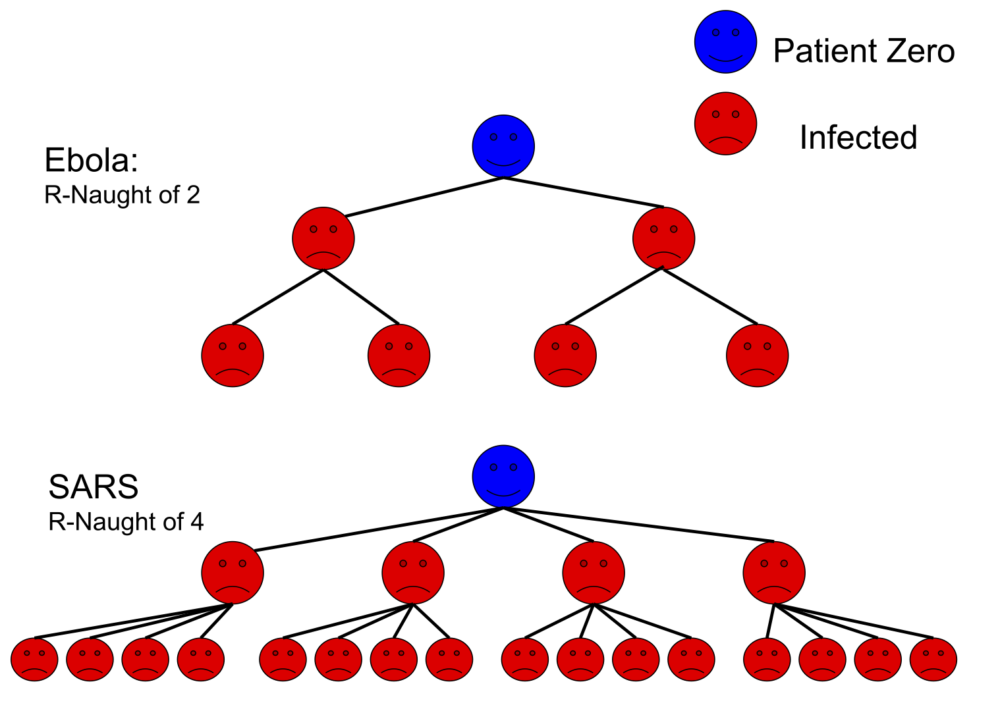


<aside class="notes"><p><em>Commentaire</em> :
Introduire la notion de $R_0$ comme une vitesse de propagation d&#39;un agent infectieux mais aussi un paramètre seuil : il résume en un nombre l&#39;aptitude d&#39;un agent infectieux à envahir une population.</p>
</div></aside></script></section><section  data-markdown><script type="text/template"><!-- .slide: class="drop" template="" -->
<div class="" style="position: absolute; left: 0px; top: 0px; height: 1000px; width: 1400px; min-height: 1000px; display: flex; flex-direction: column; align-items: center; justify-content: center" absolute="true">

##### 1.3/ $R\_0$ et capacité vectorielle $C$

Pour une maladie vectorielle, $R\_0$ dépend de :
$$R_0 = \frac{m \cdot a^2 \cdot b \cdot c \cdot e^{-\mu T}}{r \cdot \mu} = C \cdot \frac{bc}{r}$$
  * **densité** de moustiques par hôte ($m$) = moustiques par personne
  * **taux de piqûre** sur l'hôte ($a$) = piqûres par moustique par jour
  * probabilité de transmission moustique ↔ humain = infectiosité ($b$) et competence ($c$) du moustique
  * le **taux de mortalité** journalier du moustique ($\mu$)
  * **durée d’incubation** dans le moustique ($T$) = durée du cycle extrinsèque ou EIP
  * taux de guérison de l'hôte ($r$) = inverse de la durée moyenne de l’infectiosité humaine
- &shy;<!-- .element: class="fragment" data-fragment-index="1" -->Tous ces paramètres sont particulièrement **sensibles au climat et à l’environnement**.

https://carlo-costantini.shinyapps.io/Vectorial_Capacity/

<aside class="notes"><p><em>Commentaire</em> :
Sans dériver la formule, montrer que changer un seul paramètre peut avoir un effet multiplicatif.</p>
<p><em>Sources</em> :</p>
<ul>
<li><p>Macdonald, 1957, <em>Mem. Soc. Endem. Dis.</em></p>
</li>
<li><p>Smith et al., 2012, <em>Science</em>.</p>
</li>
<li><p><strong>Teaching notes:</strong></p>
<ul>
<li>Explicitly say: “We will not do the maths; just remember that R₀ is a <strong>product</strong> of multiple traits.”</li>
<li>Use this to justify why multiple aspects of global change (temperature, pesticides, land use) can interact in <strong>non-linear</strong> ways.</li>
</ul>
</li>
<li><p><strong>Gotchas:</strong></p>
<ul>
<li>Avoid writing the full formula if students have weak maths; it can intimidate.</li>
<li>Don’t suggest that R₀ is fixed; it is <strong>dynamic and environment-dependent</strong>.</div></li>
</ul>
</li>
</ul>
</aside></script></section><section  data-markdown><script type="text/template"><!-- .slide: class="drop" template="" -->
<div class="" style="position: absolute; left: 0px; top: 0px; height: 1000px; width: 1400px; min-height: 1000px; display: flex; flex-direction: column; align-items: center; justify-content: center" absolute="true">

##### 1.4/ Cinq grandes classes de changements globaux


* **Climat** : réchauffement, modification des pluies, événements extrêmes.
* **Urbanisation** : îlots de chaleur, réseaux d’eau, déchets, pollution lumineuse.
* **Pollutions** : pesticides, engrais, métaux lourds, (micro)plastiques, résidus pharmaceutiques.
* **Déforestation & usage des terres** : agriculture, élevage, plantations, fragmentation.
* **Globalisation** : commerce, transports aériens et maritimes, mobilités humaines.

<aside class="notes"><p><em>Commentaire</em> :
Ces classes se combinent souvent dans un même lieu, parfois de manière synergique.</p>
<p><em>Sources</em> :</p>
<ul>
<li><p>IPCC, 2021, AR6 WGII.</p>
</li>
<li><p>Rockström et al., 2009, <em>Nature</em> (frontières planétaires).</p>
</li>
<li><p><strong>Teaching notes:</strong></p>
<ul>
<li>Ask students to guess examples for each category from their own country/region.</li>
<li>Make explicit that <strong>the rest of the talk</strong> follows this structure.</li>
</ul>
</li>
<li><p><strong>Gotchas</strong>:</p>
<ul>
<li>Don’t pretend these categories are perfectly independent; acknowledge overlaps.</li>
<li>Avoid overloading the slide with too many sub-bullets.</div></li>
</ul>
</li>
</ul>
</aside></script></section><section  data-markdown><script type="text/template"><!-- .slide: class="drop" template="" -->
<div class="" style="position: absolute; left: 0px; top: 0px; height: 1000px; width: 1400px; min-height: 1000px; display: flex; flex-direction: column; align-items: center; justify-content: center" absolute="true">

### 2/ CHANGEMENTS CLIMATIQUES


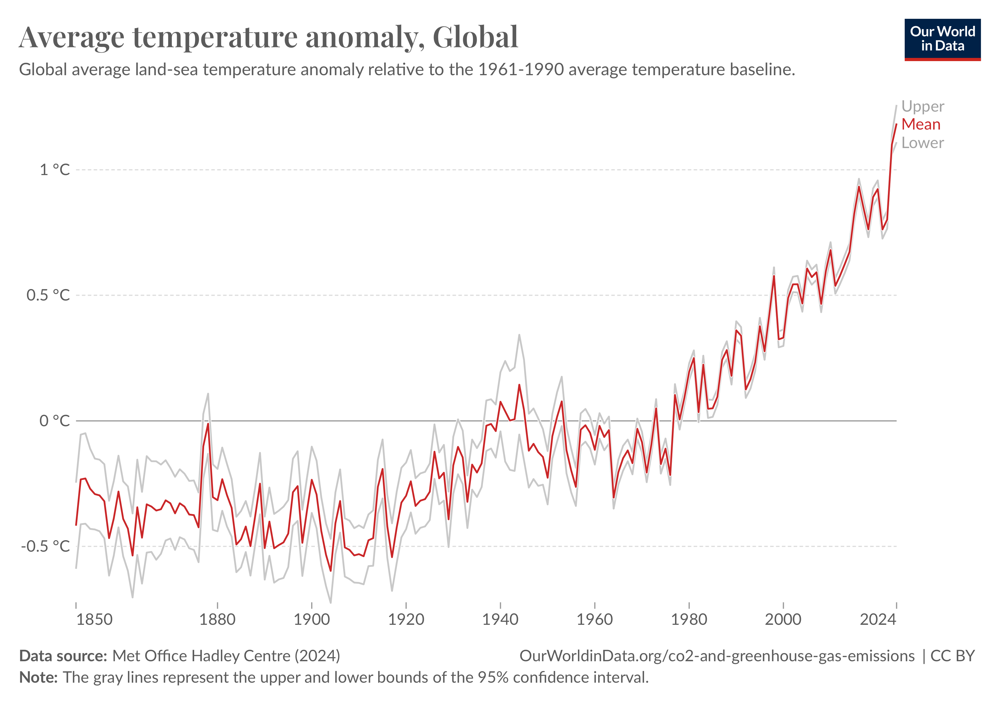
</div></script></section><section  data-markdown><script type="text/template"><!-- .slide: class="drop" template="" -->
<div class="" style="position: absolute; left: 0px; top: 0px; height: 1000px; width: 1400px; min-height: 1000px; display: flex; flex-direction: column; align-items: center; justify-content: center" absolute="true">

##### 2.1/ Temperature et EIP

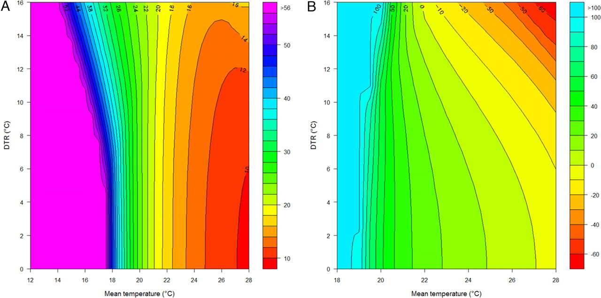


- La **temperature moyenne** et les **fluctuations journalières** de temperature affectent la **durée d'incubation** dans le moustique ($T$ ou $n$, suivant la formulation de $C$)
- &shy;<!-- .element: class="fragment" data-fragment-index="1" -->des temperatures plus élevées **accélèrent** le EIP (et *vice versa*)
- &shy;<!-- .element: class="fragment" data-fragment-index="2" -->À des températures <12°C la transmission n’est plus possible (la durée d'incubation dépasse la durée de survie du moustique)

[Paaijmans et al. (2009)](http://www.pnas.org/cgi/doi/10.1073/pnas.0903423106)
</div></script></section><section  data-markdown><script type="text/template"><!-- .slide: class="drop" template="" -->
<div class="" style="position: absolute; left: 0px; top: 0px; height: 1000px; width: 1400px; min-height: 1000px; display: flex; flex-direction: column; align-items: center; justify-content: center" absolute="true">

##### 2.2/ Courbes de performance thermique

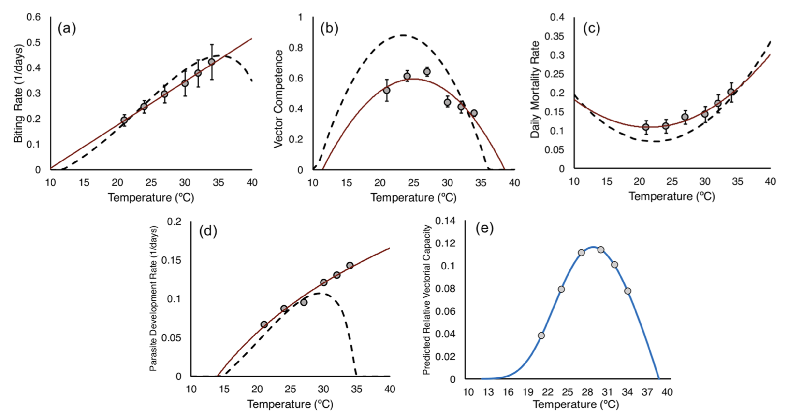


* La plupart des traits du moustique et du pathogène suivent des courbes **non linéaires**
	* faibles à basse température
	* optimales à une température intermédiaire
	* s’effondrent à haute température
* [Shapiro *et al.* (2013)](https://doi.org/10.1371/journal.pbio.2003489.g005) : optimum du paludisme autour de **28°C**, forte baisse > 31°C (*Anopheles stephensi* et *Plasmodium falciparum*).

Donc : “plus chaud” ≠ “plus de paludisme partout”.

<aside class="notes"><p><em>Commentaire</em> :
Idée clé pour casser l’intuition naïve “le réchauffement va toujours aggraver le paludisme”.</p>
<ul>
<li><p><strong>Teaching notes:</strong></p>
<ul>
<li>Show the hump clearly; point with your hand: “here is the optimum; on either side, transmission drops.”</li>
<li>Emphasise that <strong>different vectors/pathogens</strong> have different optima (malaria vs dengue).</li>
</ul>
</li>
<li><p><strong>Gotchas:</strong></p>
<ul>
<li>Don’t give exact numeric values as if they were universal; they are model-based and species-specific.</li>
<li>Avoid saying “too hot kills malaria” without nuance; make it clear this is <strong>context-dependent</strong>.</div></li>
</ul>
</li>
</ul>
</aside></script></section><section  data-markdown><script type="text/template"><!-- .slide: class="drop" template="" -->
<div class="" style="position: absolute; left: 0px; top: 0px; height: 1000px; width: 1400px; min-height: 1000px; display: flex; flex-direction: column; align-items: center; justify-content: center" absolute="true">

#### 2.3/ Climat, dengue, *Aedes*

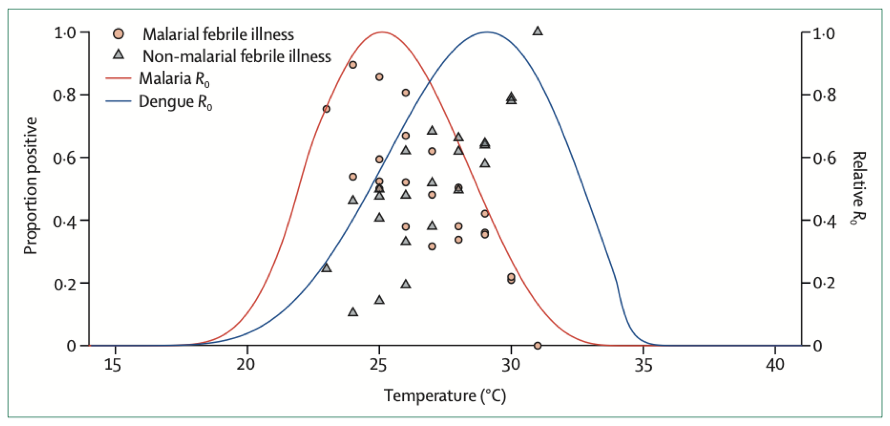


* Pour les arboviroses (dengue, Zika, chikungunya), les courbes thermiques sont souvent **plus chaudes**.
* Le réchauffement :
  * ↑ adéquation climatique pour *Aedes* dans de nombreuses villes tropicales et subtropicales.
  * extension vers des latitudes et altitudes plus élevées.
* Projection : forte augmentation du nombre de personnes exposées aux arboviroses au cours du XXIᵉ siècle.

[Mordecai et al. (2020)](https://doi.org/10.1016/S2542-5196(20)30178-9)

<aside class="notes"><p><em>Commentaire</em> :
Paludisme et dengue peuvent évoluer dans des directions différentes sous le réchauffement, surtout en milieu urbain.</p>
<p><em>Sources</em> :</p>
<ul>
<li>Ryan et al., 2019, <em>Nat. Microbiol.</em> ([PMC][4])</li>
<li>Zhang et al., 2024, <em>BMJ Glob. Health</em>. ([PMC][5])</li>
<li><ul>
<li>Mordecai et al., 2013, <em>Ecol. Lett.</em> ([PubMed][2])</li>
</ul>
</li>
</ul>
<p><em>Image suggérée</em> :
Carte mondiale des changements projetés de risque dengue (ou Aedes-borne viruses) sous scénarios climatiques.</p>
<ul>
<li><p>Teaching notes:</p>
<ul>
<li>Contrast malaria vs dengue: malaria often peaks at cooler temperatures than dengue.</li>
<li>Use this slide to introduce the idea that <strong>disease mix</strong> may shift (less malaria, more dengue) in some regions.</li>
</ul>
</li>
<li><p>Gotchas:</p>
<ul>
<li>Don’t imply dengue risk will rise everywhere; emphasise regional heterogeneity.</li>
<li>Be cautious not to oversell models; remind students they are <strong>scenarios</strong>, not predictions.</li>
</ul>
</li>
</ul>
</div></aside></script></section><section  data-markdown><script type="text/template"><!-- .slide: class="drop" template="" -->
<div class="" style="position: absolute; left: 0px; top: 0px; height: 1000px; width: 1400px; min-height: 1000px; display: flex; flex-direction: column; align-items: center; justify-content: center" absolute="true">

#### 2.4/ Projections paludisme *versus* dengue en Afrique

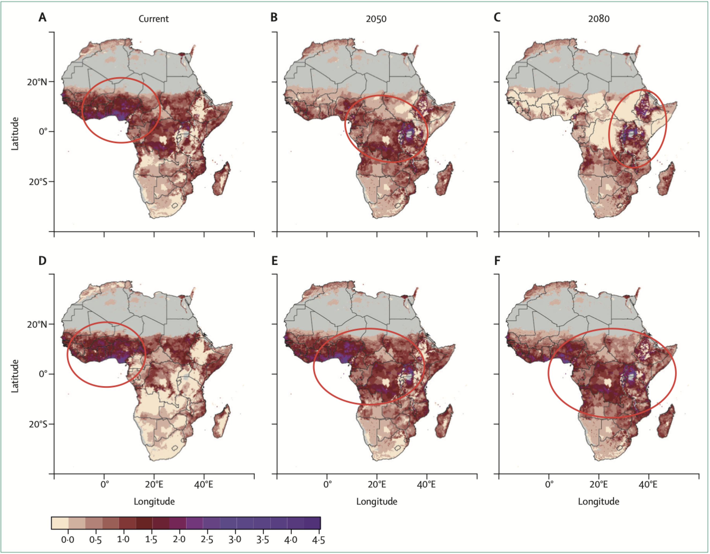


- **diminution** globale des 'hotspots' **paludisme** (sauf en altitude)
- **augmentation** globale des 'hotspots' **dengue**

[Mordecai et al. (2020)](https://doi.org/10.1016/S2542-5196(20)30178-9)
</div></script></section><section  data-markdown><script type="text/template"><!-- .slide: class="drop" template="" -->
<div class="" style="position: absolute; left: 0px; top: 0px; height: 1000px; width: 1400px; min-height: 1000px; display: flex; flex-direction: column; align-items: center; justify-content: center" absolute="true">

#### 2.4/ Hydrologie & paludisme en Afrique

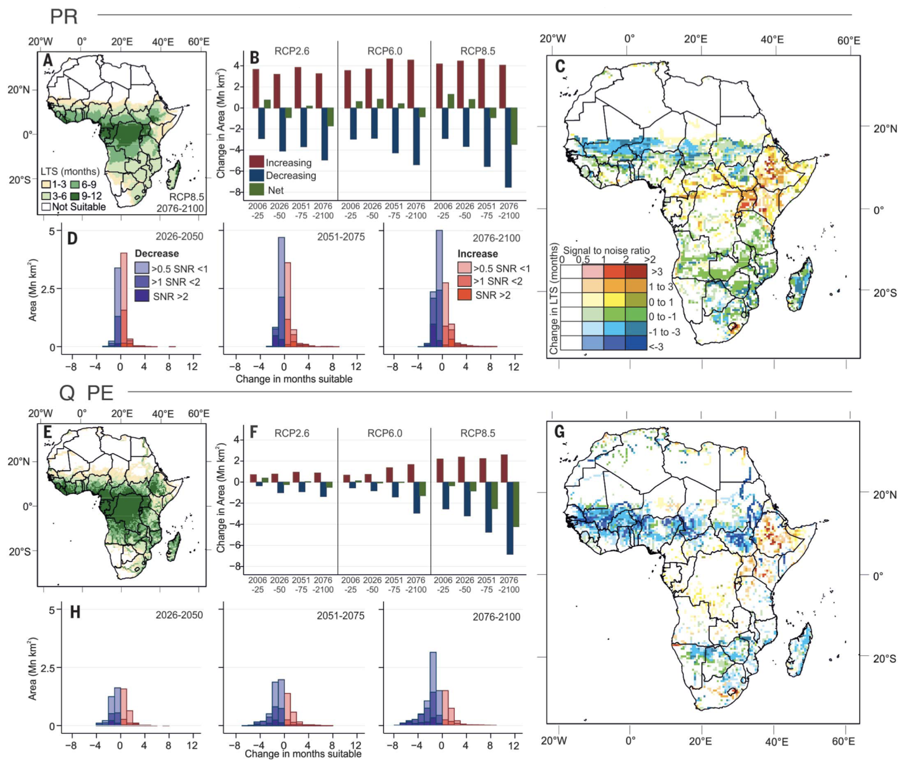


* Les premiers modèles “climat–paludisme” ignoraient la dynamique détaillée de l’**eau de surface**.
* [Smith et al. (2024)](https://www.science.org/doi/abs/10.1126/science.adk8755) intègrent des modèles hydrologiques et climatiques pour l’Afrique :
  * **↓ nette** de la surface *hydroclimatiquement* adaptée à la transmission.
  * Mais patrons spatiaux plus **complexes** et plus sensibles aux scénarios d’émissions.
* Implication : la disponibilité réelle des gîtes (mares, flaques, rizières) est aussi importante que la température.

<aside class="notes"><p><em>Commentaire</em> :
L’eau est le “goulot d’étranglement” pour les anophèles dans de nombreuses régions.</p>
<p><em>Sources</em> :</p>
<ul>
<li>Smith et al., 2024, <em>Science</em>. ([Science][6])</li>
<li>Smith, 2024, Global Water Forum article. ([Global Water Forum][7])</li>
</ul>
<p><em>Image suggérée</em> :
Carte Afrique montrant la différence “climat seul” vs “climat + hydrologie” pour la superficie à risque palustre.</p>
<ul>
<li><p>Teaching notes:</p>
<ul>
<li>Explain in plain language: “When we add real water movement, future malaria area is <strong>smaller and patchier</strong> than climate-only maps suggested.”</li>
<li>Emphasise that local water management (irrigation, dams, drainage) becomes a <strong>key control lever</strong>.</li>
</ul>
</li>
<li><p>Gotchas:</p>
<ul>
<li>Avoid saying malaria will “disappear” from Africa; the study predicts <strong>net reductions</strong>, not eradication.</li>
<li>Clarify that this is about <strong>suitability</strong>, not directly about incidence, which also depends on health systems.</li>
</ul>
</li>
</ul>
</div></aside></script></section><section  data-markdown><script type="text/template"><!-- .slide: class="drop" template="" -->
<div class="" style="position: absolute; left: 0px; top: 0px; height: 1000px; width: 1400px; min-height: 1000px; display: flex; flex-direction: column; align-items: center; justify-content: center" absolute="true">

#### 2.4/ Climat extrême : canicules, sécheresses, inondations


* **Canicules** :

  * peuvent ↓ la survie des moustiques si trop prolongées
  * mais ↑ temporairement la vitesse de développement du parasite.
* **Sécheresses** :
  * ↓ gîtes naturels
  * ↑ stockage d’eau domestique → gîtes pour *Aedes* en ville.
* **Inondations / pluies extrêmes** :
  * créent de nouveaux gîtes temporaires
  * surchargent les systèmes d’évacuation, surtout en zone urbaine.
* Les extrêmes induisent des **pics de risque** difficiles à capturer avec des moyennes annuelles.

[Lowe et al. (2018)](http://dx.doi.org/10.1016/S2542-5196(20)30292-8)


<aside class="notes"><p><em>Commentaire</em> :
Penser “événements” plutôt que “climat moyen” pour comprendre certains foyers épidémiques.</p>
<p><em>Sources</em> :</p>
<ul>
<li>Lowe et al., 2018, <em>Lancet Planet. Health</em>.</li>
<li>Ryan et al., 2019, <em>Nat. Microbiol.</em></li>
</ul>
<p><em>Image suggérée</em> :
Tableau en 3 colonnes (canicule, sécheresse, inondation) avec icônes &amp; impacts sur moustiques/ transmission.</p>
<ul>
<li><p>Teaching notes:</p>
<ul>
<li>Give one concrete example (e.g., drought–storage–dengue in Brazil, or flood–malaria link).</li>
<li>Ask students which type of extreme event is most common in their region and how it might affect vectors.</li>
</ul>
</li>
<li><p>Gotchas:</p>
<ul>
<li>Don’t claim all extremes increase risk; some heatwaves may temporarily <strong>suppress</strong> vectors.</li>
<li>Avoid conflating weather (short-term) and climate (long-term) in your wording.</li>
</ul>
</li>
</ul>
</div></aside></script></section><section  data-markdown><script type="text/template"><!-- .slide: class="drop" template="" -->
<div class="" style="position: absolute; left: 0px; top: 0px; height: 1000px; width: 1400px; min-height: 1000px; display: flex; flex-direction: column; align-items: center; justify-content: center" absolute="true">

### 3/ URBANISATION

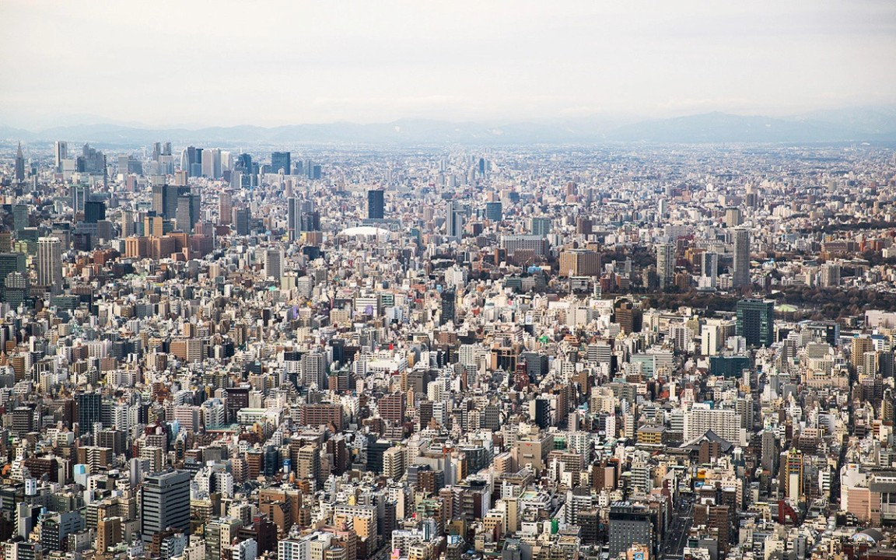


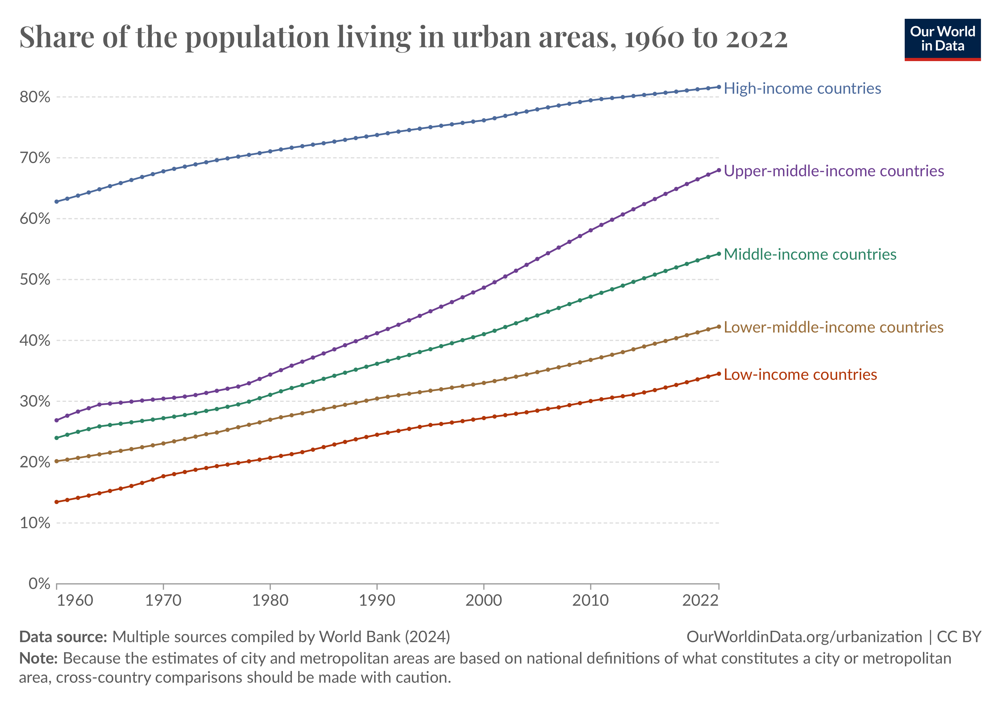
</div></script></section><section  data-markdown><script type="text/template"><!-- .slide: class="drop" template="" -->
<div class="" style="position: absolute; left: 0px; top: 0px; height: 1000px; width: 1400px; min-height: 1000px; display: flex; flex-direction: column; align-items: center; justify-content: center" absolute="true">

#### 3.1/ Urbanisation : un “laboratoire” pour les moustiques


* Les villes modifient profondément :

  * la **température** (îlots de chaleur urbains)
  * la **disponibilité de l’eau** (réseaux, fuites, réservoirs, déchets)
  * la **lumière nocturne** et l’activité humaine
- &shy;<!-- .element: class="fragment" data-fragment-index="1" -->L’urbanisation favorise :
  * les moustiques **conteneuristes** (*Aedes aegypti*, *Ae. albopictus*)
  * les moustiques qui se développent dans des **eaux polluées** (*Culex quinquefasciatus*)
  * certains anophèles récemment **adaptés** à ce milieu (*An. stephensi*, *An. coluzzii*, *An. arabiensis*).

<aside class="notes"><p><em>Commentaire</em> :
Les villes sont des systèmes socio-écologiques complexes où humains et moustiques co-évoluent rapidement.</p>
<p><em>Sources</em> :</p>
<ul>
<li><p>Robert et al., 2003, <em>Am. J. Trop. Med. Hyg.</em></p>
</li>
<li><p>WHO, 2022, <em>Global vector control response</em>.</p>
</li>
<li><p><strong>Teaching notes:</strong></p>
<ul>
<li>Emphasise that urbanisation is <strong>not just population density</strong> but also water, waste and light management.</li>
<li>Use local examples (e.g. Dakar, Ouagadougou, Libreville) if relevant to the students.</li>
</ul>
</li>
<li><p><strong>Gotchas:</strong></p>
<ul>
<li>Avoid a simplistic “urban = more disease” line; some urban services actually reduce risk.</li>
<li>Don’t forget indoor vs outdoor biting patterns in different housing types.</div></li>
</ul>
</li>
</ul>
</aside></script></section><section  data-markdown><script type="text/template"><!-- .slide: class="drop" template="" -->
<div class="" style="position: absolute; left: 0px; top: 0px; height: 1000px; width: 1400px; min-height: 1000px; display: flex; flex-direction: column; align-items: center; justify-content: center" absolute="true">

#### 3.2/ Îlots de chaleur urbains & microclimat

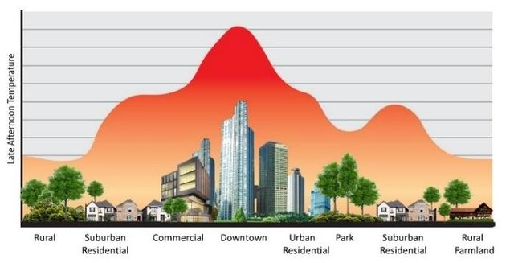


* Les villes sont souvent plus chaudes que les zones rurales voisines, surtout la nuit.
* Conséquences :
	* nuits plus chaudes → transmission accrue quand la température rurale est sous-optimale
	* saison de transmission plus longue pour certains moustiques.
* Les microclimats (cours, bidonvilles, zones végétalisées) créent une mosaïque de niches thermiques.

<aside class="notes"><p><em>Commentaire</em> :
L’échelle pertinente pour le moustique est parfois celle de la <strong>cour intérieure</strong> plutôt que du “climat de la ville”.</p>
<p><em>Sources</em> :</p>
<ul>
<li><p>Lambrechts et al., 2011, <em>PLoS NTD</em>.</p>
</li>
<li><p>Shocket et al., 2025, <em>Nat. Commun.</em> ([Nature][8])</p>
</li>
<li><p><strong>Teaching notes:</strong></p>
<ul>
<li>Explain how even a 2–3 °C difference at night can move conditions closer to the thermal optimum for Aedes or Anopheles.</li>
<li>Highlight that urban greening can serve both climate adaptation and vector control.</li>
</ul>
</li>
<li><p><strong>Gotchas:</strong></p>
<ul>
<li>Don’t overstate the effect size without numbers; keep it qualitative.</li>
<li>Be careful not to present microclimate heterogeneity as if we fully understand it; present it as an <strong>active research area</strong>.</div></li>
</ul>
</li>
</ul>
</aside></script></section><section  data-markdown><script type="text/template"><!-- .slide: class="drop" template="" -->
<div class="" style="position: absolute; left: 0px; top: 0px; height: 1000px; width: 1400px; min-height: 1000px; display: flex; flex-direction: column; align-items: center; justify-content: center" absolute="true">

#### 3.3/ Pollution organique des eaux de surface et adaptation

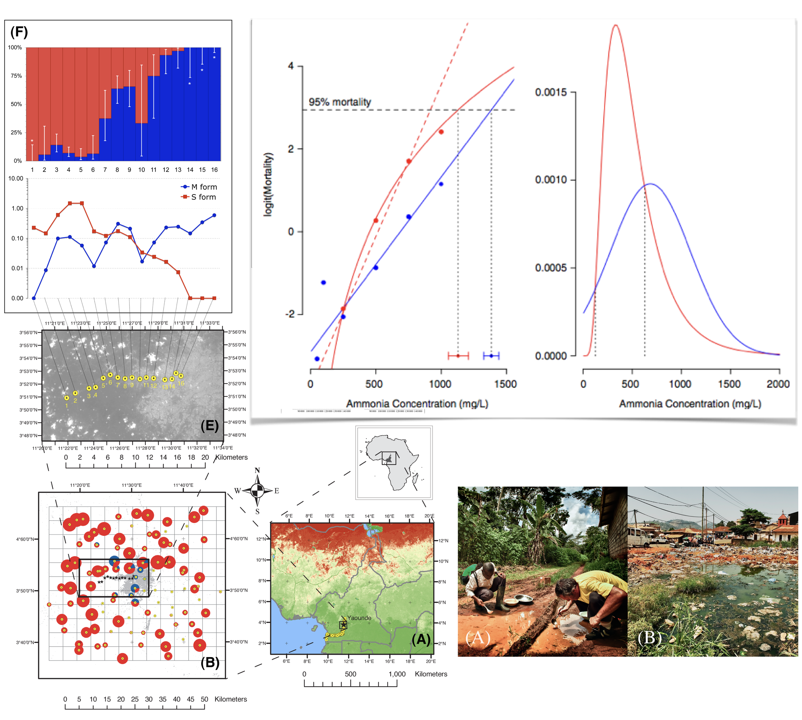


- en Afrique Centrale *Anopheles coluzzii* est le vecteur du paludisme urbain.
- &shy;<!-- .element: class="fragment" data-fragment-index="1" -->l'adaptation aux eaux à forte teneur en matière organique est associée à une meilleure tolérance à l'ammoniaque par rapport à l'espèce jumelle *An. gambiae*, qui vit en milieu rurale.

[Kamdem et al. (2012)](http://dx.plos.org/10.1371/journal.pone.0039453), [Tene-Fossog et al. (2013)](https://bmcecol.biomedcentral.com/articles/10.1186/1472-6785-13-1)
</div></script></section><section  data-markdown><script type="text/template"><!-- .slide: class="drop" template="" -->
<div class="" style="position: absolute; left: 0px; top: 0px; height: 1000px; width: 1400px; min-height: 1000px; display: flex; flex-direction: column; align-items: center; justify-content: center" absolute="true">

#### 3.4/ Pollution lumineuse et rythmes d'activité

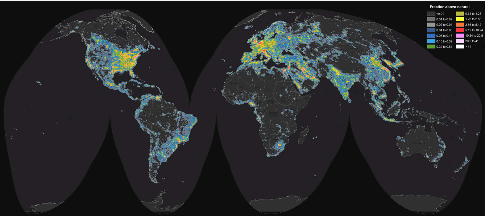


* La lumière artificielle nocturne est en forte augmentation au niveau mondial.
* Effets potentiels sur les moustiques :
	* modification des rythmes circadiens
	* extension des périodes d’activité et de piqûre
	* attraction ou répulsion selon les espèces.
- &shy;<!-- .element: class="fragment" data-fragment-index="1" -->Effets potentiels sur l’humain :
	- plus de temps passé dehors en soirée
	- perturbation du sommeil et de l’immunité.

[Falchi et al. (2016)](https://doi.org/10.1126/sciadv.1600377); [Coetzee et al. (2022)](https://doi.org/10.3389/fevo.2021.768090)

<aside class="notes"><p><em>Commentaire</em> :
Pollution lumineuse = un driver encore peu intégré dans les modèles de MTV.</p>
<p><em>Sources</em> :</p>
<ul>
<li><p>Shuboni &amp; Yan, 2010, <em>Neurosci. Biobehav. Rev.</em> (lumière &amp; rythmes).</p>
</li>
<li><p><strong>Teaching notes:</strong></p>
<ul>
<li>Use this slide to broaden students’ view of “pollution” beyond chemicals to <strong>sensory pollution</strong>.</li>
<li>Encourage them to think about interactions: light × microclimate × human behaviour.</li>
</ul>
</li>
<li><p><strong>Gotchas</strong>:</p>
<ul>
<li>Don’t claim strong causal links where data are sparse; frame as <strong>hypotheses and emerging evidence</strong>.</li>
<li>Avoid implying that simply turning lights off will “solve” malaria or dengue.</div></li>
</ul>
</li>
</ul>
</aside></script></section><section  data-markdown><script type="text/template"><!-- .slide: class="drop" template="" -->
<div class="" style="position: absolute; left: 0px; top: 0px; height: 1000px; width: 1400px; min-height: 1000px; display: flex; flex-direction: column; align-items: center; justify-content: center" absolute="true">

#### 3.5/ Modification des rythmes de piqûre


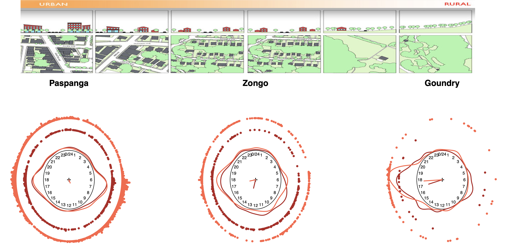


Rythmes de piqûre d’*Aedes aegypti* au cours de 24h selon un gradient d’urbanisation à Ouagadougou, Burkina Faso (Badolo *et al.*, 2025)
</div></script></section><section  data-markdown><script type="text/template"><!-- .slide: class="drop" template="" -->
<div class="" style="position: absolute; left: 0px; top: 0px; height: 1000px; width: 1400px; min-height: 1000px; display: flex; flex-direction: column; align-items: center; justify-content: center" absolute="true">

### 4/ POLLUTIONS


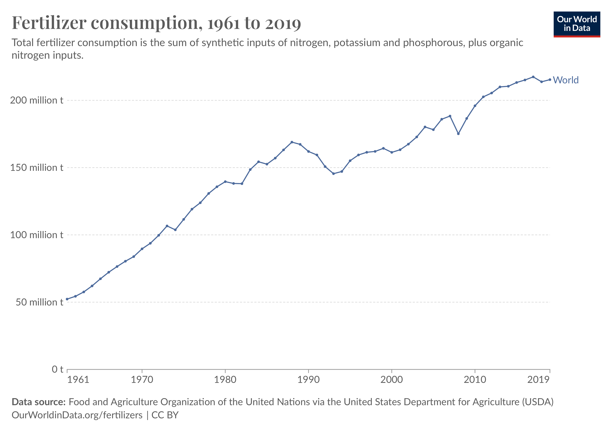
</div></script></section><section  data-markdown><script type="text/template"><!-- .slide: class="drop" template="" -->
<div class="" style="position: absolute; left: 0px; top: 0px; height: 1000px; width: 1400px; min-height: 1000px; display: flex; flex-direction: column; align-items: center; justify-content: center" absolute="true">

#### 4.1/ Pesticides et résistance

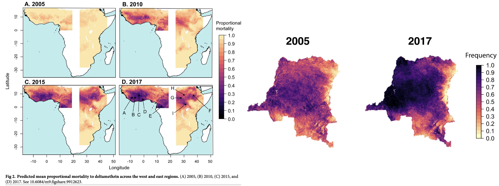


* Les insecticides sont au cœur de la lutte antivectorielle (MII, IRS, larvicides).
* Usage massif → **sélection** d’allèles de résistance (ex. *kdr* au locus *Vgsc*).
* L’agriculture, les usages domestiques et la santé publique contribuent tous à la pression de sélection.
* Résultat : baisse d’efficacité des outils classiques et nécessité d’**innovations**.

[Hankock et al. (2020)](http://dx.doi.org/10.1371/journal.pbio.3000633); [Hancock et al. (2022)](https://doi.org/10.1186/s12915-022-01242-1)

<aside class="notes"><p><em>Commentaire</em> :
L’environnement chimique est un moteur majeur de l’évolution des moustiques.</p>
<p><em>Sources</em> :</p>
<ul>
<li><p>Ranson &amp; Lissenden, 2016, <em>Trends Parasitol.</em></p>
</li>
<li><p>WHO, 2023, vecteur alertes. ([World Health Organization][1])</p>
</li>
<li><p><strong>Teaching notes:</strong></p>
<ul>
<li>Clearly differentiate <strong>operational failure</strong> (loss of control impact) from a simple shift in bioassay mortality.</li>
<li>Emphasise that resistance management needs coordination across agriculture and public health.</li>
</ul>
</li>
<li><p><strong>Gotchas:</strong></p>
<ul>
<li>Avoid giving the impression that “everything is resistant”; highlight heterogeneity and local data needs.</li>
<li>Don’t blame farmers; frame this as a system-level problem.</div></li>
</ul>
</li>
</ul>
</aside></script></section><section  data-markdown><script type="text/template"><!-- .slide: class="drop" template="" -->
<div class="" style="position: absolute; left: 0px; top: 0px; height: 1000px; width: 1400px; min-height: 1000px; display: flex; flex-direction: column; align-items: center; justify-content: center" absolute="true">

#### 4.2/ Engrais, compétition larvaire et densité

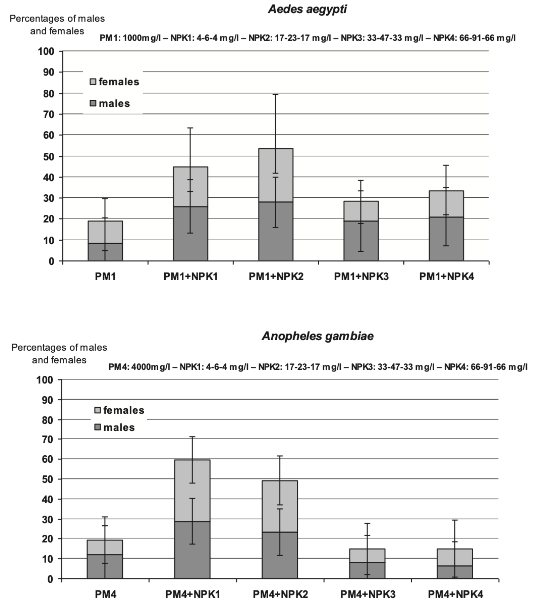


* Les engrais enrichissent les gîtes (azote, phosphore, matière organique).
* Effets possibles :
  * ↑ production de moustiques si la nourriture était limitante
  * mais aussi ↑ compétition et mortalité si les densités larvaires explosent.
* Les interactions avec les pesticides peuvent produire des réponses **contre-intuitives**.

[Darriet (2017)](http://dx.doi.org/10.1093/jme/tjx231)

<aside class="notes"><p><em>Commentaire</em> :
Important de considérer les moustiques comme des organismes intégrés à une <strong>chaîne trophique</strong>, pas isolés.</p>
<p><em>Sources</em> :</p>
<ul>
<li>Mutero et al., 2000, <em>Acta Trop.</em></li>
</ul>
<p><em>Image suggérée</em> :
Photo de canal ou rizière eutrophisée, avec eau verte/brune.</p>
<ul>
<li><strong>Teaching notes:</strong><ul>
<li>Use a simple story: “Fertiliser feeds algae and microorganisms, which feed larvae, which can raise or lower survival depending on density.”</li>
<li>Make the link to agricultural intensification and “green revolutions”.</li>
</ul>
</li>
<li><strong>Gotchas:</strong><ul>
<li>Don’t oversimplify: fertiliser effects are <strong>context-dependent</strong>; avoid universal claims.</li>
<li>Avoid demonising fertilisers; stress the need for <strong>integrated water &amp; vector management</strong>.</div></li>
</ul>
</li>
</ul>
</aside></script></section><section  data-markdown><script type="text/template"><!-- .slide: class="drop" template="" -->
<div class="" style="position: absolute; left: 0px; top: 0px; height: 1000px; width: 1400px; min-height: 1000px; display: flex; flex-direction: column; align-items: center; justify-content: center" absolute="true">

#### 4.3/ Métaux lourds & tolérance

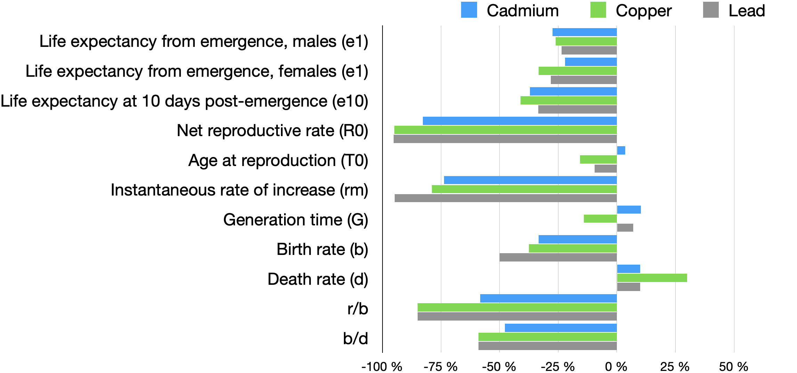


* Métaux lourds (Cd, Cu, Pb, Mn, etc.) :
  * fréquents dans les eaux urbaines, industrielles, minières.
* Sélection de souches larvaires **tolérantes** :
  * ↑ survie et parfois ↑ fécondité en présence de métaux.
  * modifications possibles des paramètres vitaux (espérance de vie, rₘ). = **coût biologique**
* Risque de **co-sélection** avec d’autres traits (ex. résistance aux insecticides).

[Mireji et al. (2010)](http://dx.doi.org/10.1111/j.1365-2915.2010.00863.x)

<aside class="notes"><p><em>Commentaire</em> :
Les milieux pollués peuvent servir de “crucibles” évolutifs pour des moustiques plus robustes.</p>
<p><em>Image suggérée</em> :
Schéma comparant les courbes de survie d’une souche sensible vs tolérante en présence de métaux.</p>
<ul>
<li><strong>Teaching notes:</strong><ul>
<li>Emphasise the idea of <strong>eco-evolutionary feedbacks</strong>: stressors can make survivors tougher.</li>
<li>Tie back to the earlier pesticide slide: multiple pollutants acting simultaneously.</li>
</ul>
</li>
<li><strong>Gotchas:</strong><ul>
<li>Avoid making strong claims about direct links to disease incidence; evidence is mainly at the <strong>lab/trait</strong> level.</li>
<li>Clarify that not all metals have the same effects or routes of exposure.</div></li>
</ul>
</li>
</ul>
</aside></script></section><section  data-markdown><script type="text/template"><!-- .slide: class="drop" template="" -->
<div class="" style="position: absolute; left: 0px; top: 0px; height: 1000px; width: 1400px; min-height: 1000px; display: flex; flex-direction: column; align-items: center; justify-content: center" absolute="true">

#### 4.4/ Principes actifs pharmaceutiques

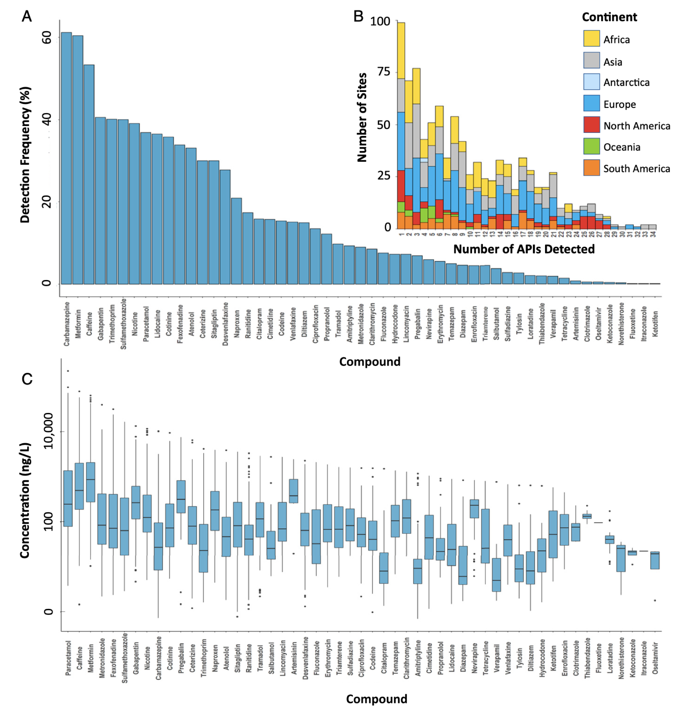

- pas suffisamment de connaissances des effets sur les traits de vie des moustiques
- pour certains (ex. caffeine) effets connus sur la survie, fécondité, fertilité

[Wilkinson et al. (2022)](https://doi.org/10.1073/pnas.2113947119)
</div></script></section><section  data-markdown><script type="text/template"><!-- .slide: class="drop" -->
<div class="" style="position: absolute; left: 0px; top: 0px; height: 1000px; width: 1400px; min-height: 1000px; display: flex; flex-direction: column; align-items: center; justify-content: center" absolute="true">

<div class="has-light-background" style="background-color: white; padding: 0 20px; box-sizing: border-box; position: absolute; left: 0%; top: 0%; height: 10%; width: 100%; display: flex; flex-direction: column; align-items: center; justify-content: center" align="center">

 <div class="block">

#### 4.5/ Désinfectants et détergents
</div>


</div>

<div class="" style="position: absolute; left: 3%; top: 12%; height: 85%; width: 50%; display: flex; flex-direction: column; align-items: flex-start; justify-content: flex-start" align="left">

<div class="block">

- * **Pré-exposition des larves à des désinfectants courants (savon, H₂O₂) → adultes plus tolérants à la perméthrine**
* **Implication opérationnelle** : des polluants urbains non ciblés par la lutte antivectorielle peuvent **alimenter la résistance/ tolérance** et réduire l’efficacité des LLINs/IRS, soulignant la nécessité d’une **gestion intégrée de la résistance** au-delà des seuls insecticides.
</div>


</div>

<div class="" style="position: absolute; left: 53%; top: 12%; height: 85%; width: 50%; display: flex; flex-direction: column; align-items: flex-start; justify-content: flex-start" align="left">

<div class="block">

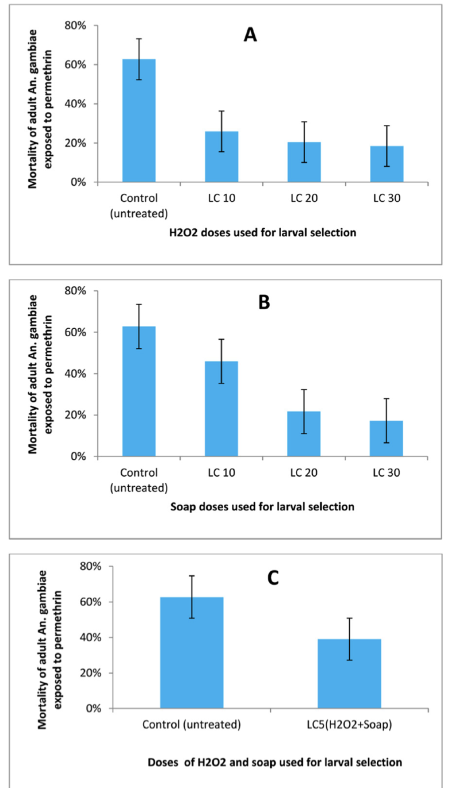

</div>


</div>


<style>
.horizontal_dotted_line {
    border-bottom: 2px dotted gray;
} 
</style>

<div class="horizontal_dotted_line" style="position: absolute; left: 3%; top: 99%; height: 0%; width: 94%; display: flex; flex-direction: column; align-items: center; justify-content: center" >

</div>

<div class="" style="padding: 20px 40px; box-sizing: border-box; position: absolute; left: 0%; top: 99%; height: 1%; width: 100%; display: flex; flex-direction: column; align-items: flex-start; justify-content: space-evenly" align="left">

<div class="block">

[Antonio-Nkondjio et al. (2014)](http://malariajournal.biomedcentral.com/articles/10.1186/1475-2875-13-296)
</div>


<!-- .element: style="font-size: 20px" -->
</div>
</div></script></section><section  data-markdown><script type="text/template"><!-- .slide: class="drop" template="" -->
<div class="" style="position: absolute; left: 0px; top: 0px; height: 1000px; width: 1400px; min-height: 1000px; display: flex; flex-direction: column; align-items: center; justify-content: center" absolute="true">

### 5/ DEFORESTATION et USAGE des TERRES


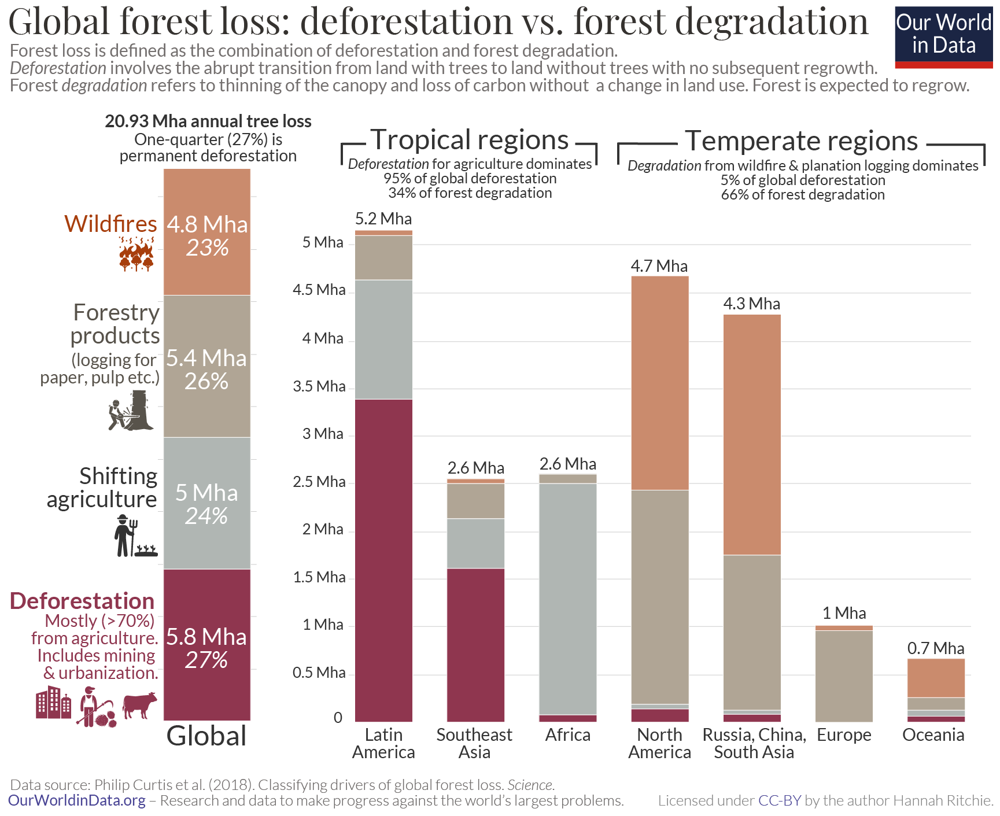
</div></script></section><section  data-markdown><script type="text/template"><!-- .slide: class="drop" template="" -->
<div class="" style="position: absolute; left: 0px; top: 0px; height: 1000px; width: 1400px; min-height: 1000px; display: flex; flex-direction: column; align-items: center; justify-content: center" absolute="true">

#### 5.1/ Déforestation : microclimat & gîtes

* La déforestation :

  * ↑ température et variabilité thermique au sol
  * ↑ lumière, ↓ ombrage
  * modification de l’hydrologie locale (ruissellement, mares, fossés)
* Beaucoup d’anophèles vecteurs préfèrent des gîtes **ensoleillés et non ombragés**.
* Conversion forêt → agriculture peut donc ↑ la densité de vecteurs.

<aside class="notes"><p><em>Commentaire</em> :
La moindre couverture forestière peut transformer une vallée “marginale” en foyer palustre.</p>
<p><em>Sources</em> :</p>
<ul>
<li><p>Afrane et al., 2008, <em>Malaria J.</em></p>
</li>
<li><p>Paaijmans et al., 2010, <em>PNAS</em>.</p>
</li>
<li><p><strong>Teaching notes:</strong></p>
<ul>
<li>Explain microclimate intuitively: shaded forest vs sunlit field, with water pools warming faster.</li>
<li>Mention highland East Africa as a classic example where deforestation altered malaria risk.</li>
</ul>
</li>
<li><p><strong>Gotchas:</strong></p>
<ul>
<li>Don’t imply <em>all</em> deforestation increases malaria; some settings may see different outcomes.</li>
<li>Keep focus on <strong>ecological mechanisms</strong>, not only moral arguments.</div></li>
</ul>
</li>
</ul>
</aside></script></section><section  data-markdown><script type="text/template"><!-- .slide: class="drop" template="" -->
<div class="" style="position: absolute; left: 0px; top: 0px; height: 1000px; width: 1400px; min-height: 1000px; display: flex; flex-direction: column; align-items: center; justify-content: center" absolute="true">

#### 5.2/ Déforestation, pauvreté & paludisme

* Analyses multi-pays en Afrique :
  * La déforestation est associée à ↑ prévalence palustre chez les enfants.
  * Effet **surtout marqué dans les ménages les plus pauvres**.
  * Peu ou pas d’augmentation détectable dans les ménages les plus riches.
* Interprétation :
  * logements plus vulnérables, plus d’exposition professionnelle
  * accès plus limité à la prévention et aux soins.
* Triangle du risque : **environnement + pauvreté + biologie du vecteur**.

[Estifanos et al., (2024)](https://doi.org/10.1029/2022GH000764)

<aside class="notes"><p><em>Commentaire</em> :
Les impacts sanitaires des changements d’usage des terres sont socialement <strong>inégalement répartis</strong>.</p>
<p><em>Image suggérée</em> :
Graphique stylisé : déforestation (x) vs prévalence palustre (y), deux courbes (pauvres vs riches).</p>
<ul>
<li><strong>Teaching notes:</strong><ul>
<li>Emphasise social gradients: the same ecological change hits poor households harder.</li>
<li>Connect to health equity and SDG goals.</li>
</ul>
</li>
<li><strong>Gotchas:</strong><ul>
<li>Avoid suggesting that wealth “protects” people immunologically; specify <strong>housing, exposure and health care</strong>.</li>
<li>Be careful not to blame local communities; focus on structural drivers.</div></li>
</ul>
</li>
</ul>
</aside></script></section><section  data-markdown><script type="text/template"><!-- .slide: class="drop" template="" -->
<div class="" style="position: absolute; left: 0px; top: 0px; height: 1000px; width: 1400px; min-height: 1000px; display: flex; flex-direction: column; align-items: center; justify-content: center" absolute="true">

### 6/ GLOBALISATION


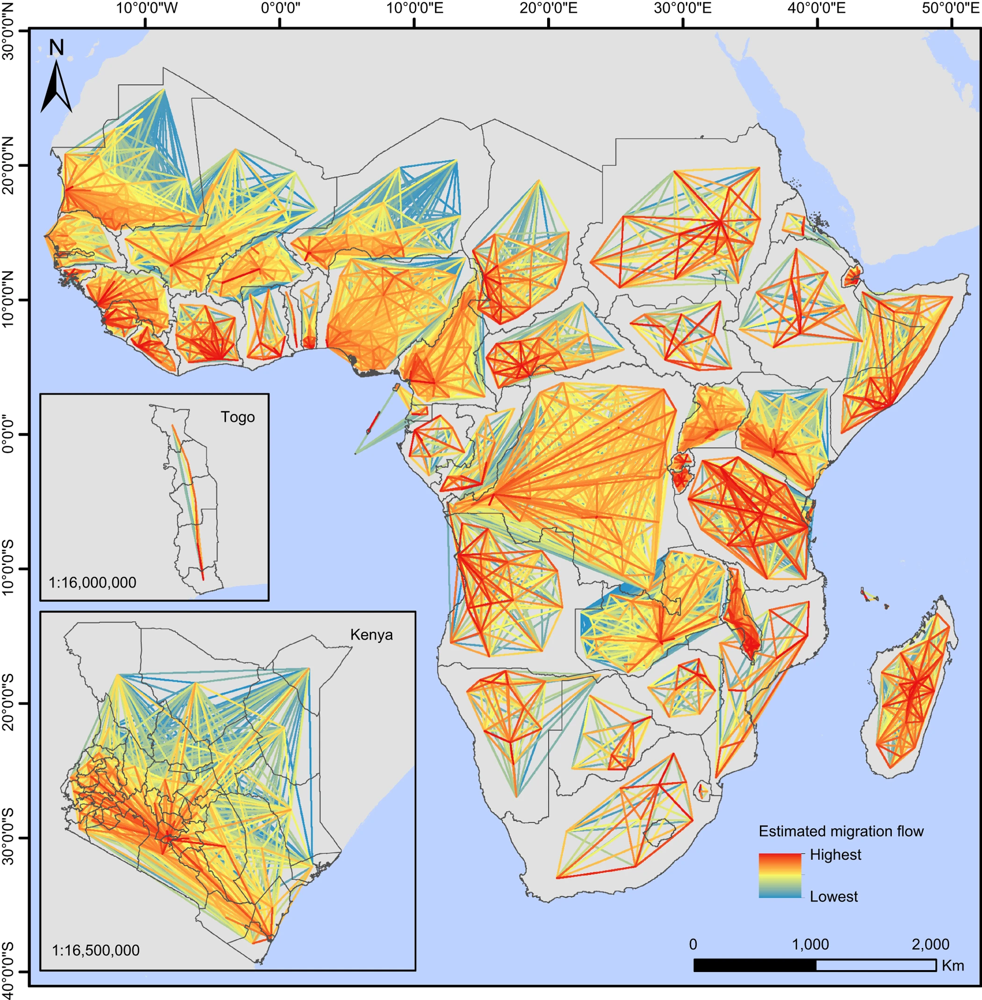
</div></script></section><section  data-markdown><script type="text/template"><!-- .slide: class="drop" template="" -->
<div class="" style="position: absolute; left: 0px; top: 0px; height: 1000px; width: 1400px; min-height: 1000px; display: flex; flex-direction: column; align-items: center; justify-content: center" absolute="true">

#### 6.1/ Globalisation : routes pour moustiques, pathogènes et gènes

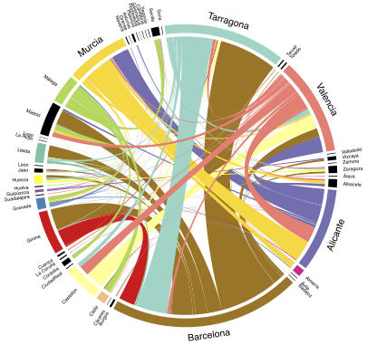


* Commerce international maritime (conteneurs, pneus usagés) → invasion de nouvelles régions géographiques à l'échelle inter-continentale.
* Mobilité routière → déplacements rapides d'*Aedes albopictus* sur des moyennes distances (diffusion régionale)
* Transports aériens → mouvements rapides d’humains infectés.
* Résultat :
  * redistribution mondiale des moustiques vecteurs
  * introduction répétée de virus dans de nouvelles zones.
  * diffusion des résistances

[Reiter (1998)](https://www.biodiversitylibrary.org/content/part/JAMCA/JAMCA_V14_N1_P083-094.pdf); [Killeen (2003)](https://doi.org/10.1016/s1473-3099(03)00776-x) [Eritjia et al. (2017)](https://doi.org/10.1038/s41598-017-12652-5)

<aside class="notes"><p><em>Commentaire</em> :
Les navires et avions, et même les voitures (<em>Aedes albopictus</em> en Europe), sont des “corridors écologiques” pour moustiques et pathogènes.</p>
<p><em>Sources</em> :</p>
<ul>
<li>Tatem et al., 2006, <em>PNAS</em>.</li>
</ul>
<p><em>Image suggérée</em> :
Carte mondiale des routes maritimes et aériennes superposées à des zones de dengue ou paludisme.</p>
<ul>
<li><strong>Teaching notes:</strong><ul>
<li>Use vivid language: “Mosquitoes and viruses travel business class.”</li>
<li>Add a quick historical example: <em>Ae. aegypti</em> and yellow fever in the Americas.</li>
</ul>
</li>
<li><strong>Gotchas:</strong><ul>
<li>Don’t imply all introductions lead to establishment; colonisation requires <strong>suitable habitat</strong>.</li>
<li>Avoid conflating mobility of people with mobility of vectors; clarify both.</div></li>
</ul>
</li>
</ul>
</aside></script></section><section  data-markdown><script type="text/template"><!-- .slide: class="drop" template="" -->
<div class="" style="position: absolute; left: 0px; top: 0px; height: 1000px; width: 1400px; min-height: 1000px; display: flex; flex-direction: column; align-items: center; justify-content: center" absolute="true">

#### 6.2/ Aedes albopictus : expansion mondiale

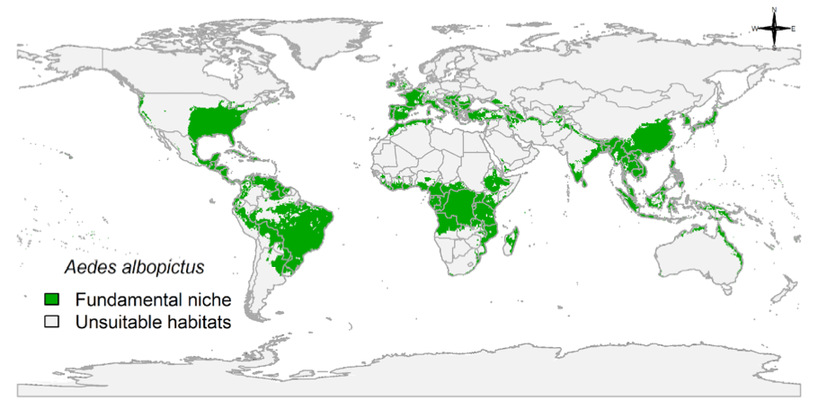


* Originaire d’Asie du Sud-Est, maintenant présente sur plusieurs continents.
* Traits clés :
  * œufs résistants à la dessiccation et à la baisse de température
  * forte plasticité écologique
  * utilisation de gîtes artificiels (pneus, récipients).
* Réchauffement + urbanisation + globalisation → extension vers l’Europe, l’Amérique du Nord, etc.

[Laporta et al. (2023)](https://doi.org/10.3390/insects14010049)

<aside class="notes"><p><em>Commentaire</em> :
Une espèce envahissante emblématique des liens entre climat, ville et commerce.</p>
<p><em>Sources</em> :</p>
<ul>
<li>Laporta et al., 2023, <em>Sci. Total Environ.</em> ([ScienceDirect][12])</li>
</ul>
<p><em>Image suggérée</em> :
Carte Europe/monde montrant les zones colonisées par <em>Ae. albopictus</em> et les zones à risque futur.</p>
<ul>
<li><strong>Teaching notes:</strong><ul>
<li>Mention the situation in France or Europe (number of affected départements, local outbreaks).</li>
<li>Point out that vector presence plus imported cases is enough to create local outbreaks.</li>
</ul>
</li>
<li><strong>Gotchas:</strong><ul>
<li>Don’t say “tiger mosquito = dengue guaranteed”; emphasise the need for both vector and virus.</li>
<li>Avoid confusion between <em>Ae. aegypti</em> and <em>Ae. albopictus</em>; clarify their differences.</div></li>
</ul>
</li>
</ul>
</aside></script></section><section  data-markdown><script type="text/template"><!-- .slide: class="drop" template="" -->
<div class="" style="position: absolute; left: 0px; top: 0px; height: 1000px; width: 1400px; min-height: 1000px; display: flex; flex-direction: column; align-items: center; justify-content: center" absolute="true">

#### 6.3/ Exemples récents en Europe

* Expansion continue de *Ae. albopictus* vers le nord et l’ouest en [Europe](https://www.ecdc.europa.eu/en/news-events/increasing-risk-mosquito-borne-diseases-eueea-following-spread-aedes-species).
* Premiers cas autochtones récents de :
  * dengue, chikungunya, West Nile dans plusieurs pays européens.
* La [France](https://www.lemonde.fr/sciences-au-carre/article/2025/08/29/les-nouvelles-menaces-du-moustique-tigre_6637377_6565027.html ) et des régions jusqu’ici tempérées deviennent progressivement **climatiquement favorables** à certaines MTV. 

<aside class="notes"><p><em>Commentaire</em> :
Les MTV ne sont plus un “problème tropical” lointain ; elles deviennent une réalité de santé publique en zone tempérée.</p>
<p><em>Image suggérée</em> :
Carte Europe avec zones d’implantation d’<em>Ae. albopictus</em> et points d’épisodes autochtones récents.</p>
<ul>
<li><strong>Teaching notes:</strong><ul>
<li>Use this slide to keep European/temperate students engaged: “This is not just a ‘tropical’ lecture.”</li>
<li>Highlight public health challenges: surveillance, communication, and public perception.</li>
</ul>
</li>
<li><strong>Gotchas:</strong><ul>
<li>Avoid alarmism; emphasise that risk is increasing but still manageable with strong systems.</li>
<li>Clarify that sporadic outbreaks ≠ endemicity (yet) in many regions.</div></li>
</ul>
</li>
</ul>
</aside></script></section><section  data-markdown><script type="text/template"><!-- .slide: class="drop" template="" -->
<div class="" style="position: absolute; left: 0px; top: 0px; height: 1000px; width: 1400px; min-height: 1000px; display: flex; flex-direction: column; align-items: center; justify-content: center" absolute="true">

#### 6.4/ *Anopheles stephensi* : urbanisation du paludisme

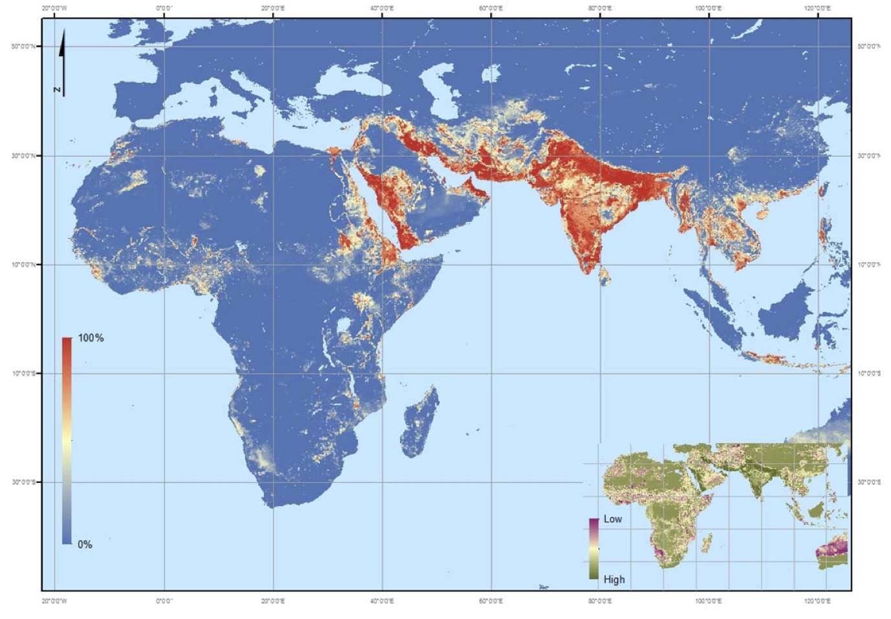


* Vecteur historique du paludisme **urbain** en Asie du Sud.
* Depuis ~2012 : détection en Afrique (Djibouti, puis autres pays de la Corne de l’Afrique et au-delà).
* Gîtes : conteneurs, citernes, réservoirs d’eau urbains → profil proche d’*Aedes*.
* Contexte africain : présence de grands réservoirs de parasites dans les zones rurales voisines.

[Sinka et al. (2022)](https://doi.org/10.1073/pnas.2003976117); [WHO (2023) *Initiative to stop the spread of An. stephensi*.](https://www.who.int/publications/i/item/WHO-UCN-GMP-2022.06 )

<aside class="notes"><p><em>Commentaire</em> :
<em>An. stephensi</em> brouille la frontière “paludisme rural vs dengue urbaine”.</p>
<ul>
<li><strong>Teaching notes:</strong><ul>
<li>Tell the Djibouti story: detection, rapid establishment, resurgence of malaria.</li>
<li>Emphasise that African cities were historically relatively protected from intense malaria transmission; this may change.</li>
</ul>
</li>
<li><strong>Gotchas:</strong><ul>
<li>Don’t exaggerate the current geographic range; stick to confirmed reports.</li>
<li>Avoid suggesting that <em>An. stephensi</em> alone will “urbanise” all malaria; many factors interact (housing, control, health systems).</div></li>
</ul>
</li>
</ul>
</aside></script></section><section  data-markdown><script type="text/template"><!-- .slide: class="drop" template="" -->
<div class="" style="position: absolute; left: 0px; top: 0px; height: 1000px; width: 1400px; min-height: 1000px; display: flex; flex-direction: column; align-items: center; justify-content: center" absolute="true">

#### 6.5/ Transfert des résistances de l'Asie à l'Afrique

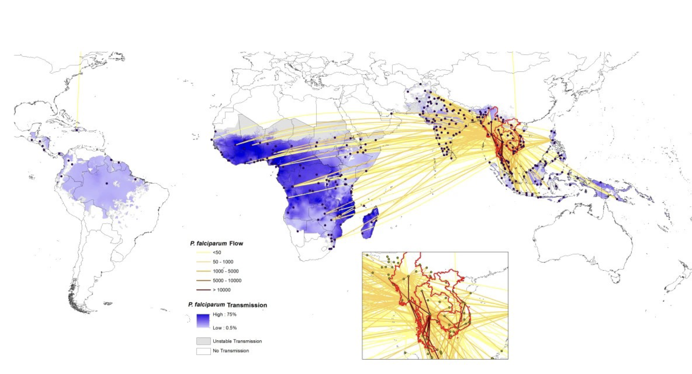


* Risque de **propagation au reste du monde** par voie aérienne de souches de *Plasmodium falciparum* en provenance **du bassin du Grand Mekong** où les **résistances aux antipaludéens** prennent historiquement toujours origine.

[Huang & Tatem (2013)](https://malariajournal.biomedcentral.com/articles/10.1186/1475-2875-12-269)
</div></script></section><section  data-markdown><script type="text/template"><!-- .slide: class="drop" template="" -->
<div class="" style="position: absolute; left: 0px; top: 0px; height: 1000px; width: 1400px; min-height: 1000px; display: flex; flex-direction: column; align-items: center; justify-content: center" absolute="true">

### 7/ Synthèse : non-linéarité et multi-drivers

* Les moustiques sont des **capteurs biologiques** des changements globaux.
* Les effets sont **non linéaires** :
  * un même changement (ex. réchauffement) peut ↓ le paludisme dans une région
  * et ↑ la dengue ou d’autres MTV ailleurs.
* Les drivers interagissent : climat × urbanisation × pollutions × pauvreté × résistances.
* Les modèles doivent intégrer ces **interactions** pour guider les décisions.

<aside class="notes"><p><em>Commentaire</em> :
Message clé : se méfier des narratifs simplistes “plus chaud = plus de maladie”.</p>
<p><em>Sources</em> :</p>
<ul>
<li>Patz et al., 2005, <em>EcoHealth</em>.</li>
</ul>
<p><em>Image suggérée</em> :
Schéma en réseau reliant climat, eau, ville, pollutions, globalisation et sorties “paludisme”, “dengue”, etc.</p>
<ul>
<li><strong>Teaching notes:</strong><ul>
<li>Revisit each of the five global change classes briefly, giving one takeaway each.</li>
<li>Emphasise that <strong>uncertainty</strong> is not ignorance; models still help prioritise.</li>
</ul>
</li>
<li><strong>Gotchas:</strong><ul>
<li>Don’t leave students with a feeling of hopeless complexity; stress that mechanistic understanding allows <strong>targeted interventions</strong>.</li>
<li>Avoid over-criticising models; acknowledge their value while being honest about limitations.</div></li>
</ul>
</li>
</ul>
</aside></script></section><section  data-markdown><script type="text/template"><!-- .slide: class="drop" template="" -->
<div class="" style="position: absolute; left: 0px; top: 0px; height: 1000px; width: 1400px; min-height: 1000px; display: flex; flex-direction: column; align-items: center; justify-content: center" absolute="true">

### cette présentation est disponible en ligne à l'URL ci-contre :

https://costantinicarlo.github.io/moustiques_vecteurs_et_changements_globaux/
</div></script></section><section  data-markdown><script type="text/template"><!-- .slide: class="drop" template="" -->
<div class="" style="position: absolute; left: 0px; top: 0px; height: 1000px; width: 1400px; min-height: 1000px; display: flex; flex-direction: column; align-items: center; justify-content: center" absolute="true">

#### 7.2/ Questions pour la discussion

* Donner un exemple où le réchauffement pourrait :
  * **diminuer** le risque palustre
  * **augmenter** le risque d’arboviroses.
* Dans votre pays ou région :
  * quel driver (climat, urbanisation, pollutions, déforestation, globalisation) vous semble le plus préoccupant ?
  * pourquoi ?

<aside class="notes"><p><em>Commentaire</em> :
Slide de conclusion interactive pour mobiliser les connaissances et encourager la réflexion critique.</p>
<p><em>Image suggérée</em> :
Photo générique de discussion en groupe ou de réunion de communauté/agents de santé.</p>
<ul>
<li><strong>Teaching notes:</strong><ul>
<li>Use this slide to shift from “lecture mode” to “seminar mode” if time allows.</li>
<li>Prompt a few students from different backgrounds (medicine vs ecology) to contrast perspectives.</li>
</ul>
</li>
<li><strong>Gotchas:</strong><ul>
<li>Keep an eye on time; don’t let a single question monopolise the discussion.</li>
<li>Be ready to gently steer away from purely political debates back to <strong>evidence and mechanisms</strong>.</div></li>
</ul>
</li>
</ul>
</aside></script></section><section  data-markdown><script type="text/template"><!-- .slide: class="drop" template="" -->
<div class="" style="position: absolute; left: 0px; top: 0px; height: 1000px; width: 1400px; min-height: 1000px; display: flex; flex-direction: column; align-items: center; justify-content: center" absolute="true">

[1]: https://www.who.int/publications/i/item/WHO-UCN-GMP-2022.06  "WHO initiative to stop the spread of Anopheles stephensi in ..."
[2]: https://pubmed.ncbi.nlm.nih.gov/23050931/  "Optimal temperature for malaria transmission is ..."
[3]: https://pmc.ncbi.nlm.nih.gov/articles/PMC10500480/  "Temperature and transmission of chikungunya, dengue, and Zika ..."
[4]: https://pmc.ncbi.nlm.nih.gov/articles/PMC6438455/  "Global expansion and redistribution of Aedes-borne virus ..."
[5]: https://pmc.ncbi.nlm.nih.gov/articles/PMC12056631/  "Mosquito and global dengue cases in a warming world - PMC"
[6]: https://www.science.org/doi/10.1126/science.adk8755  "Future malaria environmental suitability in Africa is ..."
[7]: https://www.globalwaterforum.org/2024/07/04/using-hydrology-to-understand-future-malaria-burden-in-africa/  "Using hydrology to understand future malaria burden in ..."
[8]: https://www.nature.com/articles/s41467-025-58612-w  "Mean daily temperatures predict the thermal limits of ..."
[9]: https://www.ecdc.europa.eu/en/news-events/increasing-risk-mosquito-borne-diseases-eueea-following-spread-aedes-species  "Increasing risk of mosquito-borne diseases in EU/EEA following ..."
[10]: https://pubmed.ncbi.nlm.nih.gov/38425366/  "Impacts of Deforestation on Childhood Malaria Depend ..."
[11]: https://www.sciencedirect.com/science/article/pii/S294991512500006X  "Global expansion of Aedes mosquitoes and their role in the ..."
[12]: https://www.sciencedirect.com/science/article/pii/S004896972500837X  "Evolution of the recent habitat suitability area of Aedes albopictus in ..."
[13]: https://www.lemonde.fr/sciences-au-carre/article/2025/08/29/les-nouvelles-menaces-du-moustique-tigre_6637377_6565027.html "Les nouvelles menaces du moustique-tigre"
[14]: https://www.theguardian.com/science/2025/may/23/climate-change-could-bring-insect-borne-tropical-diseases-to-uk-scientists-warn  "Climate change could bring insect-borne tropical diseases to UK, scientists warn"
</div></script></section></div>
    </div>

    <script src="dist/reveal.js"></script>
    <script src="plugin/notes/notes.js"></script>
    <script src="plugin/markdown/markdown.js"></script>
    <script src="plugin/obsidian-markdown.js"></script>
    <script src="plugin/highlight/highlight.js"></script>

    <script src="plugin/zoom/zoom.js"></script>
    <script src="plugin/math/math.js"></script>
    <script src="plugin/mermaid/mermaid.js"></script>
    <script src="plugin/chart/chart.umd.js"></script>
    <script src="plugin/chart/plugin.js"></script>
    <script src="plugin/menu/menu.js"></script>
    <script src="plugin/customcontrols/plugin.js"></script>
    <script src="plugin/reveal-pointer/pointer.js"></script>

    <script>
        function extend() {
            const target = {};
            for (let i = 0; i < arguments.length; i++) {
                const source = arguments[i];
                for (const key in source) {
                    if (source.hasOwnProperty(key)) {
                        target[key] = source[key];
                    }
                }
            }
            return target;
        }

        function isLight(color) {
            let hex = color.replace('#', '');

            // convert #fff => #ffffff
            if (hex.length == 3) {
                hex = `${hex[0]}${hex[0]}${hex[1]}${hex[1]}${hex[2]}${hex[2]}`;
            }

            const c_r = parseInt(hex.substr(0, 2), 16);
            const c_g = parseInt(hex.substr(2, 2), 16);
            const c_b = parseInt(hex.substr(4, 2), 16);
            const brightness = ((c_r * 299) + (c_g * 587) + (c_b * 114)) / 1000;
            return brightness > 155;
        }

        const bgColor = getComputedStyle(document.documentElement).getPropertyValue('--r-background-color').trim();

        if (isLight(bgColor)) {
            document.body.classList.add('has-light-background');
        } else {
            document.body.classList.add('has-dark-background');
        }

        // default options to init reveal.js
        const defaultOptions = {
            controls: true,
            progress: true,
            history: true,
            center: true,
            transition: 'default', // none/fade/slide/convex/concave/zoom
            plugins: [
                ObsidianMarkdown,
                RevealHighlight,
                RevealZoom,
                RevealNotes,
                RevealMath.MathJax3,
                RevealMermaid,
                RevealChart,
                RevealCustomControls,
                RevealMenu,
                RevealPointer,
            ],
            allottedTime: 120 * 1000,
            mathjax3: {
                mathjax: 'plugin/math/mathjax/tex-chtml.js',
            },
            markdown: {
                gfm: true,
            },
            mermaid: {
                theme: isLight(bgColor) ? 'default' : 'dark',
            },
            customcontrols: {
                controls: [
                ]
            },
            menu: {
                loadIcons: false
            }
        };

        if ( pageInIframe() ) {
            defaultOptions.scrollActivationWidth = 5;
        }

        // options from URL query string
        const queryOptions = Reveal().getQueryHash() || {};

        const options = extend(defaultOptions, {"controls":true,"progress":"false","slideNumber":false,"center":true,"transition":"fade","transitionSpeed":"normal","width":"1400","height":"1000","margin":0.04,"maxScale":1}, queryOptions);
    </script>

    <script>
      Reveal.initialize(options);
    </script>
    <!-- created with Slides Extended reveal.html template -->
</body>
</html>
